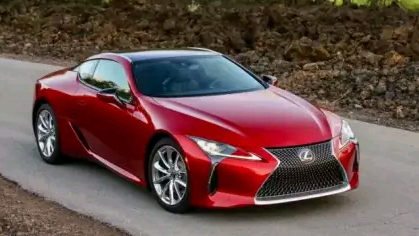
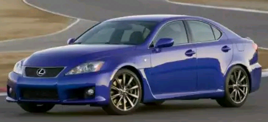
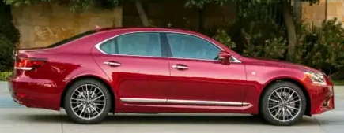
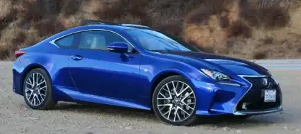

Categories
Here’s a list of our top 10 Lexus of all time
Lexus has only been around since 1983, but that hasn’t stopped them from creating some amazing vehicles. Not many years after their debut, Lexus became one of the best-selling luxury car manufacturers in America. Most every affluent neighborhood in America soon had Lexus vehicles in the driveway. They were fuel-efficient, comfortable, safe, and reliable as well. During those years, they weren’t explicitly known for creating fast, performance vehicles, but the company set out to change that. You’ll be amazed at some of the fastest Lexus cars ever made.

LFA Nürburgring Performance Package (Fastest Lexus)If you thought the Lexus LFA was the holy grail of their vehicles, you were wrong. They added another ten horsepower to the supercar with the Nürburgring Performance Package. This fastest Lexus version has 562 horsepower, a re-calibrated transmission, plus aggressive aerodynamics. There’s also a track-tuned suspension which helped this car lap Nürburgring in just 7:14. This car set the record for a car without non-competition tires, making it the fastest Lexus ever built. Of all the Lexus LFAs built (which was only 500), there were only 50 of them with the Nürburgring Performance Package. Horsepower isn’t all that got added to this supercar. It also has a carbon fiber front spoiler, fixed rear wing, and dive planes. The mesh-style wheels come with grippy tires, plus there’s a stiff, adjustable suspension. To shift even faster, this car comes with a recalibrated gearbox. One of these beauties went on auction not that long ago and sold for $445,000. The 2012 supercar only had 1,600 miles on the odometer. That’s less than 300 miles each year! We imagine this car made one new customer very happy. |
|---|
LFAIn the second place, but not by much is the Lexus LFA. This limited-edition supercar competed against Lamborghini, Porsche, and Ferrari. It’s no longer in production, but it featured an F1-style 5.2-liter V10 engine that produced 552 horsepower. This lightweight car went from 0-60 mph in only 3.6 seconds and could reach 202 miles per hour. This car also featured a carbon fiber-reinforced polymer body. They went into production at the end of 2010 and sold for $375,000. Then, Lexus released a circuit-tuned model in 2012 that came with a price tag of $445,000. That made it one of the most expensive Japanese road vehicles ever. Production came to an end in 2012 after they produced 500 cars. Lexus made a statement in 2016 that they had no plans to revive their LFA. Instead, they want it to remain an icon for many years to come. In the future, they might consider creating another supercar, but it seems they are content to let this high-powered machine’s legacy live on. As speed-enthusiasts it’s the consumers the lose out as Lexus did a great job at creating a supercar and we’re confident they could’ve built another high-quality machine that would impress. |
|---|
LC 500If you want one of the fastest Lexus car models, you can look at a current model, the LC 500. It’s been in production since 2017 and features a 2UR-GSE 5.0-liter V8 engine with D-4S direct fuel injection and optimized VVT-i. This engine produces 471 horsepower and propels the car to 60 mph in just 4.3 seconds. This car also comes with a Direct Shift ten-speed automatic transmission, which makes it the first time any automaker used a ten-speed transmission in a luxury vehicle. This grand-tourer has serious sex appeal and in 2017, almost 2,500 of these vehicles were sold in the United States. There’s also an optional Sport package available that includes a carbon fiber reinforced plastic roof, speed-activated rear-wing, plus 21-inch forged aluminum wheels. In addition to extreme speeds, the company also supplies many safety features standard through their Lexus Safety System +. This suite comes with a Pre-Collisions System and Pedestrian Detection, All-Speed Dynamic Radar Cruise Control, Lane Departure Alert with Steering Assist, and Intelligent High Beams. As an added safety measure, the Lexus LC 500 utilizes a pop-up hood after a front impact occurs with a pedestrian. This elevates the hood to prevent personal injury. All of the LC 500 models are produced at Toyota’s Motomachi facility, which is also where the LFA is built. They’ve even reconfigured the factory just to accommodate the LC. Many of the same craftsmen who worked to create the LFA continue to produce the LC. In total, each member of the assembly team spends about 20 minutes doing their part. Then, the final quality check occurs in a silent glass-walled inspection booth. |
|---|
RC FWith its long nose, the RC F is one of the fastest Lexus cars ever produced. It does contain the same powertrain as their GS F super sedan, but it reaches 60 mph in just 4.3 seconds. That’s because the RC F weighs less and has adjustable traction settings. The F is the high-performance line of the RC and was unveiled during the 2014 North American International Auto Show. Then, it began to show up at dealerships in November of that year as a 2015 model. This high-powered vehicle features a 5.0-liter 2UR-GSE V8 engine that produces 467 horsepower. It’s paired with Toyota’s AA80E eight-speed transmission, Brembo four-wheel power-assisted disc brakes with ABS, brake assist, and electronic brake force distribution. They are still in production but had their best sales year in 2015. This RC F is equipped with Torque Vectoring Differential that has three operating modes: Track, Slalom, or Standard. It also has a coil-spring independent suspension in the rear and front, gas-filled shock absorbers, ball-joined stabilizer bars, and 19-inch forged aluminum wheels. With the Aerodynamic Package, customers also receive tuning of the underbody, an active rear spoiler, intakes located in the grille, plus aero stabilizing fins, and front fender vents. The Carbon Fiber Package comes with a clear coated carbon fiber roof, carbon fiber engine board, and an active rear spoiler. |
|---|
GS FAsk anyone what one of the best sport sedans is for the money, and you’ll inevitably hear about the Lexus GS F. The GS has been in production since 1993, so it’s an iconic model for the company. It’s lasted all these years because of its sharp style, custom-tuned SACHS suspension, and extreme comfortability. It comes equipped with a 5.0-liter V8 engine that produces 467 horsepower. With power like this, it’s capable of hitting 0-60 mph in just 4.4 seconds. This engine is slightly old-school since it isn’t turbocharged. The differences between the GS F and the regular-model GS starts with the returned steering. This offers impressive control, a comfortable ride, and minimum body roll. It also comes with a long list of safety features and driver aids standard. Considering most competitors charge for many of these features, this is a perk. Even Edmunds picked the GS F as one of their Best Sport Sedans of the year. Some of the safety features include Adaptive Cruise Control, Lane Departure Warning System, and Lane Keeping Assist. In addition, the first ten years of ownership comes with the Enform Safety Connect plus Enform Service Connect. |
|---|
IS FIn 2008, Lexus released there IS F model which featured a 5.0-liter V8 and 416 horsepower. Before it released the IS F, there was no dedicated performance sedan for the automaker. At its release, it cost just above $60,000 without options, so it was priced competitively with the Mercedes C63 and BMW M3. Unfortunately, it was discontinued in 2014, but you can find one of these beasts on the used car market and enjoy the 0-60 mph time of 4.6 seconds. The drive behind the wheel of an IS F is spicy and sporty, to say the least. It offers inspiring performances and features an aggressive style. Early models had a harsh suspension, but several revisions fixed that and made the ride more comfortable. Not only is it one of the fastest Lexus vehicles ever made, but standard features also abounded. It came with 19-inch alloy wheels, a limited-slip rear differential, Brembo brakes, a sport-tuned suspension, LED daytime running lights, bi-xenon headlights, a sunroof, auto-dimming mirrors, keyless ignition and entry, eight-way power heated leather front sport seats, and dual-zone automatic climate control. There was also Bluetooth and a 13-speaker audio system included as well as iPod integration. |
|---|
LS 460If you want one of the fastest Lexus cars, you’ll be interested in checking out the LS 460 as well. When the 600 retired, the LS 460 took its place. It features a 4.6-liter V8 engine that produces 368 horsepower. That takes it to 60 mph in only 5.4 seconds. That’s pretty impressive considering the size of this car. The first models hit the United States in 2006 with base prices starting just over $60,000. Because of options, average prices ended up being around $80,000. This put Lexus on the same playing field as Jaguar, BMW, and Audi. In 2010, they revised the model to feature a new front and rear fascia, wheel designs, and side mirror turn signals. It also included some new technology like automatic high beams and a self-repairing clear coat. The fifth-generation was released in 2017 and it’s the first sedan from the automaker to have the six-sided window design. It also comes with a panoramic moonroof. The LS has always been produced at Toyota’s Tahara factory in Japan. It’s been the sole production site since the inauguration. |
|---|
LS 600hRight behind the LS 460 on the list of fastest Lexus cars ever made is the LS 600h. This retired model was a hybrid version with 438 horsepower. The combination of the internal combustion engine and the hybrid system created an explosive torque-filled experience for drivers. In fact, it was capable of hitting 60 mph in only 5.5 seconds. That’s awfully impressive considering the car weighed 5,159 pounds. The downside of this hybrid was the fuel efficiency. No one could mistake it for a Prius with the 20 mpg rating. Lexus compared their LS 600 h to other models with a more powerful V12. It also did wow consumers with the super ultra-low-emission-vehicle rating which made it a better option compared to the standard LS model. |
|---|
IS 350 F SportThis model and the RC 350 Coupe feature the same 3.5-liter V6 engine with 311 horsepower. That’s why we’ve placed it in ninth place on our ten fastest Lexus cars list. It only beat the R 350 because it does weight 155 pounds lighter, which means that the 5.6-second 0-60 mph time is slightly quicker. New models come with an F SPORT-tuned Adaptive Variable Suspension, high-friction brake pads, Electronic Brakeforce Distribution, Brake Assist, Electronic Power Steering, 18-inch split-five-spoke alloy wheels, and six-speed automatic transmission plus paddle shifters. |
|---|
RC 350 F SportRounding out our list fastest Lexus models is the entry level RC 350 Sport. It packs a punch of 306 horsepower and has a 0-60 time of 5.6 seconds when equipped with the rear-wheel trim. Adding on the F Sport package gives consumers access to some aerodynamic pieces, aesthetic upgrades, and suspension tweaks, but doesn’t change the performance in any way. New models of this car start at just $43,570, so it’s a budget-friendly Lexus vehicle. Despite the low price, it comes complete with superior interior craftsmanship, a comfortable ride quality, and smooth power delivered from its V6 engine. Because it’s a coupe, the backseat is small, but it’s hard to expect too much from a budget-priced Lexus. In fact, if you look at the used car market, it’s possible to find this fastest Lexus under 20k. |
|---|
 Ferrari
Ferrari Honda
Honda Ford
Ford Suzuki
Suzuki Lamborghini
Lamborghini Lexus
Lexus Jaguar
Jaguar BMW
BMW GMC
GMC Mercedes-Benz
Mercedes-Benz